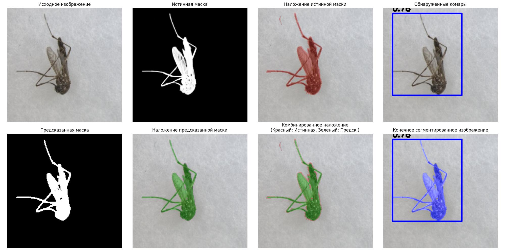

Note
Click here to download the full example code
Руководство по сегментации комаров
Это руководство демонстрирует, как использовать библиотеку culicidaelab
для выполнения сегментации комаров на изображениях. Мы рассмотрим:
- Настройку модели сегментации
- Загрузку данных для сегментации из набора данных
- Выполнение сегментации
- Визуализацию результатов
- Оценку производительности с использованием истинных (эталонных) масок
Установите библиотеку culicidaelab, если она еще не установлена
!pip install -q culicidaelab
import matplotlib.pyplot as plt
import numpy as np
from culicidaelab import MosquitoSegmenter, MosquitoDetector
from culicidaelab import DatasetsManager, get_settings
1. Инициализация настроек и загрузка набора данных
Сначала мы инициализируем наши настройки, создадим MosquitoSegmenter и загрузим набор данных для сегментации:
Получаем экземпляр настроек и инициализируем менеджер наборов данных
settings = get_settings()
manager = DatasetsManager(settings)
# Загружаем набор данных для сегментации
seg_data = manager.load_dataset("segmentation", split="train[:20]")
# Инициализируем сегментатор и детектор
segmenter = MosquitoSegmenter(settings=settings, load_model=True)
detector = MosquitoDetector(settings=settings, load_model=True)
Out:
Cache hit for split config: train[:20] (key: 9e9940e1c673b6f0)
Weights file found at: C:\Users\lenova\AppData\Local\culicidaelab\culicidaelab\models\weights\segmentation\sam2.1_t.pt
C:\Users\lenova\CascadeProjects\culicidaelab\.venv\Lib\site-packages\ultralytics\models\sam\build.py:305: FutureWarning: You are using `torch.load` with `weights_only=False` (the current default value), which uses the default pickle module implicitly. It is possible to construct malicious pickle data which will execute arbitrary code during unpickling (See https://github.com/pytorch/pytorch/blob/main/SECURITY.md#untrusted-models for more details). In a future release, the default value for `weights_only` will be flipped to `True`. This limits the functions that could be executed during unpickling. Arbitrary objects will no longer be allowed to be loaded via this mode unless they are explicitly allowlisted by the user via `torch.serialization.add_safe_globals`. We recommend you start setting `weights_only=True` for any use case where you don't have full control of the loaded file. Please open an issue on GitHub for any issues related to this experimental feature.
state_dict = torch.load(f)["model"]
Weights file found at: C:\Users\lenova\AppData\Local\culicidaelab\culicidaelab\models\weights\detection\culico-net-det-v1-nano.pt
2. Изучение образца для сегментации
Давайте изучим образец из набора данных для сегментации, чтобы понять его структуру:
Изучаем образец для сегментации
seg_sample = seg_data[0]
seg_image = seg_sample["image"]
seg_mask = np.array(seg_sample["label"]) # Преобразуем маску в массив numpy
print(f"Размер изображения: {seg_image.size}")
print(f"Форма маски сегментации: {seg_mask.shape}")
print(f"Уникальные значения в маске: {np.unique(seg_mask)}") # 0 - фон, 1 и выше - комар
# Создаем цветное наложение для маски
# Где значения в маске равны 1 и выше (комар), делаем ее красной
overlay = np.zeros((*seg_mask.shape, 4), dtype=np.uint8)
overlay[seg_mask >= 1] = [255, 0, 0, 128] # Красный цвет с 50% прозрачностью
Out:
Размер изображения: (224, 224)
Форма маски сегментации: (224, 224)
Уникальные значения в маске: [ 0 1 2 3 4 5 6 7 8 9 10 11 12 13 14 15 16 17 18 19 20 21 22 23 24 25 26 27 28 29 30 31 32 33 34 35 36 37 38 39 40 41 42 43 44 45 46 47 48 49 50 51 52 53 54 55 56 57 58 59 60 61 62 63 64 65 66 67 68 69 70 71 72 73 74 75 76 77 78
79 80 81 82 83 84 85 86 87 88 89 90 91 92 93 94 95 96 97 98 99 100 101 102 103 104 105 106 107 108 109 110 111 112 113 114 115 116 117 118 119 120 121 122 123 124 125 126 127 128 129 130 131 132 133 134 135 136 137 138 139 140 141 142 143 144 145 146 147 148 149 150 151 152 153 154 155 156 157
158 160 161 162 163 164 165 166 167 168 169 170 171 172 173 174 175 176 177 178 179 180 181 182 183 184 185 186 187 188 189 190 191 192 193 194 195 196 197 198 199 200 201 202 203 204 205 206 207 208 209 210 211 212 213 214 215 216 217 218 219 220 221 222 223 224 225 226 227 228 229 230 231 232 233 234 235 236 237
238 239 240 241 242 243 244 245 246 247 248 249 250 251 252 253 254]
3. Запуск сегментации на изображении из набора данных
Теперь мы можем запустить модель сегментации на нашем изображении из набора данных:
Запускаем детекцию для получения ограничивающих рамок
detections = detector.predict(seg_image)
# Запускаем сегментацию с рамками детекции
predicted_mask = segmenter.predict(seg_image, detection_boxes=np.array(detections))
# Создаем визуализации
annotated_image = detector.visualize(seg_image, detections)
segmented_image = segmenter.visualize(annotated_image, predicted_mask)
Out:
C:\Users\lenova\CascadeProjects\culicidaelab\.venv\Lib\site-packages\ultralytics\models\sam\predict.py:289: UserWarning: Creating a tensor from a list of numpy.ndarrays is extremely slow. Please consider converting the list to a single numpy.ndarray with numpy.array() before converting to a tensor. (Triggered internally at C:\actions-runner\_work\pytorch\pytorch\builder\windows\pytorch\torch\csrc\utils\tensor_new.cpp:281.)
bboxes = torch.as_tensor(bboxes, dtype=torch.float32, device=self.device)
4. Визуализация результатов со сравнением с истинной маской
Давайте визуализируем результаты сегментации рядом с истинной (эталонной) маской:
plt.figure(figsize=(20, 10))
# Исходное изображение
plt.subplot(2, 4, 1)
plt.imshow(seg_image)
plt.axis("off")
plt.title("Исходное изображение")
# Истинная маска
plt.subplot(2, 4, 2)
plt.imshow(seg_mask, cmap="gray")
plt.axis("off")
plt.title("Истинная маска")
# Наложение истинной маски
plt.subplot(2, 4, 3)
plt.imshow(seg_image)
plt.imshow(overlay, alpha=0.5)
plt.axis("off")
plt.title("Наложение истинной маски")
# Детекции
plt.subplot(2, 4, 4)
plt.imshow(annotated_image)
plt.axis("off")
plt.title("Обнаруженные комары")
# Предсказанная маска
plt.subplot(2, 4, 5)
plt.imshow(predicted_mask, cmap="gray")
plt.axis("off")
plt.title("Предсказанная маска")
# Наложение предсказанной маски
predicted_overlay = np.zeros((*predicted_mask.shape, 4), dtype=np.uint8)
predicted_overlay[predicted_mask >= 0.5] = [0, 255, 0, 128] # Зеленый для предсказаний
plt.subplot(2, 4, 6)
plt.imshow(seg_image)
plt.imshow(predicted_overlay, alpha=0.5)
plt.axis("off")
plt.title("Наложение предсказанной маски")
# Комбинированное наложение (истинная маска + предсказания)
combined_overlay = np.zeros((*predicted_mask.shape, 4), dtype=np.uint8)
combined_overlay[seg_mask >= 1] = [255, 0, 0, 128] # Красный для истинной маски
combined_overlay[predicted_mask >= 0.5] = [0, 255, 0, 128] # Зеленый для предсказаний
plt.subplot(2, 4, 7)
plt.imshow(seg_image)
plt.imshow(combined_overlay, alpha=0.5)
plt.axis("off")
plt.title("Комбинированное наложение\n(Красный: Истинная, Зеленый: Предск.)")
# Конечное сегментированное изображение
plt.subplot(2, 4, 8)
plt.imshow(segmented_image)
plt.axis("off")
plt.title("Конечное сегментированное изображение")
plt.tight_layout()
plt.show()

Out:
C:/Users/lenova/CascadeProjects/culicidaelab/docs/ru/examples/tutorial_part_3_mosquito_segmentation.py:145: UserWarning: FigureCanvasAgg is non-interactive, and thus cannot be shown
plt.show()
5. Оценка качества сегментации
Давайте оценим результаты сегментации, используя истинную маску:
metrics = segmenter.evaluate(
prediction=predicted_mask,
ground_truth=seg_mask,
)
print("Метрики оценки сегментации:")
for key, value in metrics.items():
if isinstance(value, float):
print(f" {key}: {value:.4f}")
else:
print(f" {key}: {value}")
Out:
Total running time of the script: ( 0 minutes 9.558 seconds)
Download Python source code: tutorial_part_3_mosquito_segmentation.py
Download Jupyter notebook: tutorial_part_3_mosquito_segmentation.ipynb